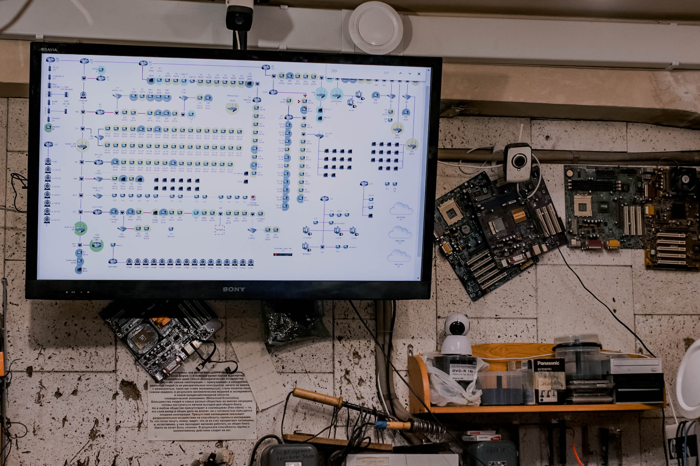

Получить профессию системного администратора сегодня достаточно просто.
Во-первых, можно приобрести необходимые знания путем самообразования. Самостоятельное обучение иногда может дать вам больше, чем классическое образование, в том случае, когда вы в полной отдачей подходите к вопросу и готовы тратить массу сил и времени, чтобы справиться с непонятными для вас вещами. Дополнительным плюсом будет знание английского языка. Все-таки он в большей степени является языком IT, чем какой-либо другой. Новые разработки, профессиональные статьи, книги и руководства сначала появляются на английском.
Для некоторых наиболее эффективно обучение у наставника. Побольше общайтесь с людьми, которые уже работают системными администраторами – вы наверняка узнаете массу интересных вещей и полезных для профессии сведений.
Во-вторых, можно посетить специальные курсы. Обучающих курсов на сегодняшний день достаточно много. Можно выбрать как очные уроки, так и проходить обучение онлайн, что гораздо удобнее. Очень многое зависит от того, кто будет вашим преподавателем, ведь нужно, чтобы вас обучали профессионалы своего дела, которые практикуются в преподаваемой дисциплине каждый день.
В-третьих, несмотря на "молодость" профессии, в каждом крупном российском городе имеется политехнический институт, где можно поступить на факультет, готовящий системных администраторов.
Чем раньше вы начнете учиться, тем полезнее это окажется для вас в будущем. Те, кто начинает изучение системного администрирования еще в колледже, могут иметь значительные преимущества перед прочими соискателями.
Самое главное, что вы получите диплом, который так часто требуется для трудоустройства. На рынке труда наибольшим спросом пользуются выпускники профильных высших учебных заведений. Особенно, если это такие лучшие политехнические ВУЗы России, как:
Московский государственный технический университет им. Н.Баумана;
Московский государственный университет им. М.В. Ломоносова;
Санкт-Петербургский государственный политехнический университет;
Национальный исследовательский Томский политехнический университет НИУ;
Уральский технический институт связи и информатики.
Для работы «рядовым» системным администратором вовсе не обязательно получать профильное IT-образование: многие ограничиваются курсами и практикой. Подавляющее большинство работодателей большего и не требует, однако если вы хотите стать действительно востребованным профессионалом, вам нужно профильное обучение в вузе.
Тем не менее, на этом обучение не заканчивается. Профессиональный системный администратор постоянно обучается, посещает дополнительные курсы, следит за развитием компьютерных технологий и применяет новинки на практике.